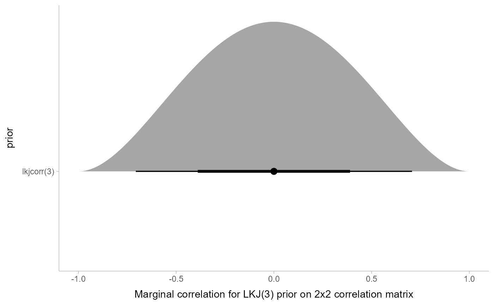

Turn spec for LKJ distribution into spec for marginal LKJ distribution
Source:R/lkjcorr_marginal.R
marginalize_lkjcorr.RdTurns specs for an LKJ correlation matrix distribution as returned by
parse_dist() into specs for the marginal distribution of
a single cell in an LKJ-distributed correlation matrix (i.e., lkjcorr_marginal()).
Useful for visualizing prior correlations from LKJ distributions.
Usage
marginalize_lkjcorr(
data,
K,
predicate = NULL,
dist = ".dist",
args = ".args",
dist_obj = ".dist_obj"
)Arguments
- data
<data.frame> A data frame containing a column with distribution names (
".dist"by default) and a list column of distribution arguments (".args"by default), such as output byparse_dist().- K
<numeric> Dimension of the correlation matrix. Must be greater than or equal to 2.
- predicate
<bare language | NULL> Expression for selecting the rows of
datato modify. This is useful ifdatacontains more than one row with an LKJ prior in it and you only want to modify some of the distributions; if this is the case, give row a predicate expression that evaluates toTRUEon the rows you want to modify.If
NULL(the default), alllkjcorrdistributions indataare modified.- dist
<string> The name of the column containing distribution names. See
parse_dist().- args
<string> The name of the column containing distribution arguments. See
parse_dist().- dist_obj
<string> The name of the output column to contain a distributional object representing the distribution. See
parse_dist().
Value
A data frame of the same size and column names as the input, with the dist, and args,
and dist_obj columns modified on rows where dist == "lkjcorr" such that they represent a
marginal LKJ correlation distribution with name lkjcorr_marginal and args having
K equal to the input value of K.
Details
The LKJ(eta) prior on a correlation matrix induces a marginal prior on each correlation
in the matrix that depends on both the value of eta and K, the dimension
of the \(K \times K\) correlation matrix. Thus to visualize the marginal prior
on the correlations, it is necessary to specify the value of K, which depends
on what your model specification looks like.
Given a data frame representing parsed distribution specifications (such
as returned by parse_dist()), this function updates any rows with .dist == "lkjcorr"
so that the first argument to the distribution (stored in .args) is equal to the specified dimension
of the correlation matrix (K), changes the distribution name in .dist to "lkjcorr_marginal",
and assigns a distributional object representing this distribution to .dist_obj.
This allows the distribution to be easily visualized using the stat_slabinterval()
family of ggplot2 stats.
Examples
library(dplyr)
library(ggplot2)
# Say we have an LKJ(3) prior on a 2x2 correlation matrix. We can visualize
# its marginal distribution as follows...
data.frame(prior = "lkjcorr(3)") %>%
parse_dist(prior) %>%
marginalize_lkjcorr(K = 2) %>%
ggplot(aes(y = prior, xdist = .dist_obj)) +
stat_halfeye() +
xlim(-1, 1) +
xlab("Marginal correlation for LKJ(3) prior on 2x2 correlation matrix")

# Say our prior list has multiple LKJ priors on correlation matrices
# of different sizes, we can supply a predicate expression to select
# only those rows we want to modify
data.frame(coef = c("a", "b"), prior = "lkjcorr(3)") %>%
parse_dist(prior) %>%
marginalize_lkjcorr(K = 2, coef == "a") %>%
marginalize_lkjcorr(K = 4, coef == "b")
#> coef prior .dist .args .dist_obj
#> 1 a lkjcorr(3) lkjcorr_marginal 2, 3 lkjcorr_marginal(2, 3)
#> 2 b lkjcorr(3) lkjcorr_marginal 4, 3 lkjcorr_marginal(4, 3)